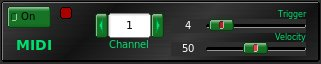

This is a experimental monophonic MIDI converter. The parameters are not stored on presets but are saved as preferences and is remembered each time you start the program.
The most important thing for a better results is tune your guitar. You need to connect with qjackctl or whatever Alsa-Seq connect utility the rakarrack MC OUT port to a synthesizer or sequencer device in order to produce sound or record something.
The Triggerparameter controls the volume passed to the note recognition algorithm.
The Velocity is for adjust the MIDI velocity sensitivity message send.
The Channel is the channel selected for the MIDI message, of course.
